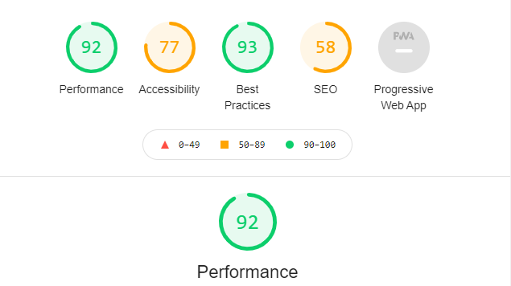

¿QUE ES WAI-ARIA?
Es una especificación que define un conjunto de atributos para mejorar la semántica y accesibilidad.
Viene dado por tres aspectos Roles, Propiedades y Estados:
- Los Roles: Definen lo que hace cada elemento.
- Las Propiedades: definen las propiedades de los elementos, que se pueden utilizar para darles un significado adicional o semántica
- Los Estados: Propiedades especiales que definen las condiciones actuales de los elementos, los estados difieren de las propiedades en que estas ultimas no cambian a lo largo del ciclo de la vida de la aplicación.
Los WAI-ARIA no afectan nada sobre la estructura de la pagina web.
CUANDO SE DEBERIA USAR WAI-ARIA
Hay 4 áreas donde WAI-ARIA es útil:
- Puntos de Referencia
- Actualizaciones de contenido dinamico
- Mejora de la accesibilidad
- Accesibilidad de controles no semánticos
Foco
El foco es la manera de navegar por la pagina web con el uso del teclado, el atributo tabindex nos ayuda a decidir si un elemento puede ser objeto del foco
- tabindex="0"- este valor permite que los elementos que normalmente no se pueden tabular se conviertan en tabulables.
- tabindex="-1" - esto permite que los elementos que normalmente no se pueden tabular reciban el foco de manera programática, por ejemplo, a través de JavaScript, o como destino de enlaces.
Puntuacion de la pagina
